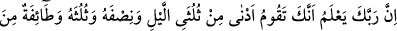
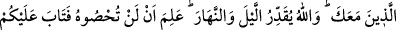
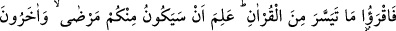
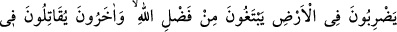
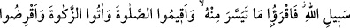
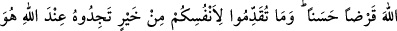
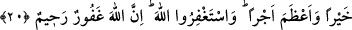

ALLAH’A GÖNÜL HOŞLUĞUYLA
ÖDÜNÇ VERİN
20. (Rasûlüm!) Senin, gecenin üçte ikisine yakın kısmını, (bazen) yarısını, (bazen
de) üçte birini yatmadan (ibâdetle) geçirdiğini ve beraberinde bulunanlardan bir
topluluğun da (böyle yaptığını) Rabbin elbette biliyor. Gece ve gündüzü (içinde
olup bitenleri iyiden iyiye) ölçüp biçen ancak Allah’tır. O sizin, bunu
sayamayacağınızı bildiği için, sizi bağışladı. Artık, Kur’an’dan kolayınıza geleni
okuyun. Allah bilmektedir ki, içinizde hastalar bulunacak, bir kısmınız Allah’ın
lütfundan (rızık) aramak üzere yeryüzünde yol tepecekler, diğer bir kısmınız da
Allah yolunda çarpışacaklardır. O hâlde Kur’an’dan kolayınıza geleni okuyun.
Namazı kılın, zekâtı verin, Allah’a gönül hoşluğuyla ödünç verin. Kendiniz için
önden (dünyada iken) ne iyilik hazırlarsanız Allah katında onu bulursunuz; hem de
daha üstün ve mükâfatça daha büyük olmak üzere. Allah’tan mağfiret dileyin,
şüphesiz Allah çok bağışlayıcı, çok esirgeyicidir.
“Rasûlüm!” Şüphesiz Rabbin “senin ve seninle birlikte olan bir topluluğun”
sahâbîlerinin “gecenin üçte ikisine yakın kısmını, (bazen) yarısını (bazen de) üçte
birini yatmadan (ibâdetle) geçirdiğini biliyor.” “ ifâdesi üçte ikiden
daha azı demektir. “Ednâ” kelimesinin “en az” anlamına olmak üzere “el-ekall”
anlamına kullanılması, “melzum”un zikredilip “lazım”ın kasdedilmesi kabilinden
mecaz-ı mürseldir. Mecaz-ı mürsel olma ilişkisini şöyle yansıtmak mümkündür. İki şey
arasında mesâfe birbirine yakın olduğunda açıklık ve sınır azalmış, uzak olduğunda ise
çoğalmış olur. İşte bu anlayış mecaz-ı mürselin temelini oluşturmaktadır.
Rivâyet olunduğuna göre bu sûrenin başında Allah gece kalkmayı farz kılmıştı.